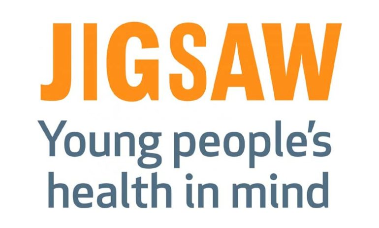

Blog

A review of Jigsaw
My name is **** and I am 13 years old.
I first came to Jigsaw half-way through my first year of Secondary School when I began to struggle with social anxiety in particular. My school was very helpful and they introduced me to Jigsaw.
Working with Jigsaw was brilliant they gave me a better way of approaching my problems which helped significantly. After a few sessions I began to notice some positive changes in how I was coping. It was suggested to set some personal goals to aim for that helped me confront my issues but at my own pace.
What I found great at Jigsaw was there patience and understanding, I was never forced to do anything or discuss anything I didn’t want to, everything happened on my terms.
The most important thing that I took away from my journey through Jigsaw is to get help when you need it and not to wait for your problems to get worse because getting help is not a sign of weakness it is a sign of strength.
At the end of my final session at Jigsaw I felt coping with my anxiety was much easier than it was six sessions ago and that I could leave with a stronger and healthier mental state!